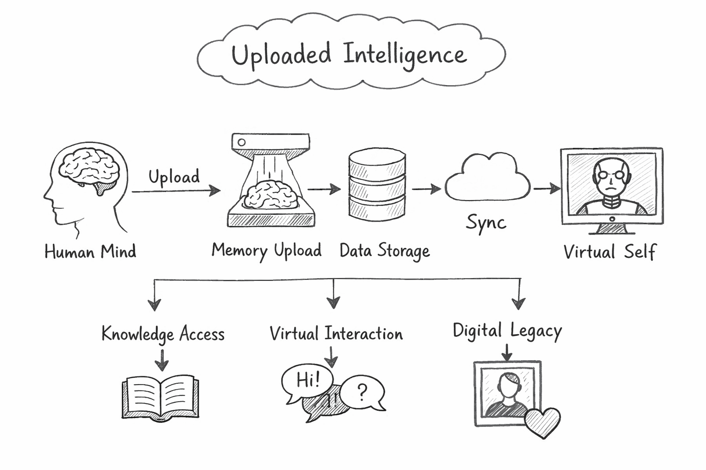

Meeting Overview
This meeting focused on the first brainstorming session for Uploaded Intelligence, a project centered on preserving human thought, memory, and personality in digital form.
The team discussed both the technical possibilities and the social consequences of such a system. Some members imagined it as a way to preserve knowledge, while others focused on the more philosophical question of whether a digital copy could ever truly be a person.
The purpose of this meeting was to define the project direction
and identify the biggest design and ethical questions early on.
Attendance List
- Erin
- Alex
- Jordan
- Taylor
Agenda
- Define the idea of uploaded intelligence
- Discuss possible use cases
- Consider technical requirements
- Talk about ethical risks
- Plan next research tasks
Unfinished Business
Items carried over from last meeting
This was the first official brainstorming session, so there was no unfinished business.
The group did agree that future meetings should track open questions involving identity, consent, and data ownership.
New Business
Core Ideas Discussed
- Preserving a person's memories in a digital archive
- Allowing future generations to interact with a simulation of a person
- Creating a search system for stored knowledge and experiences
- Using uploaded intelligence for education and research
- Exploring whether consciousness can be copied or only imitated
Design Questions
The group debated whether the platform should present uploaded minds as interactive avatars, searchable memory libraries, or conversational assistants.
Another major concern was whether convenience should outweigh what is ethically important, especially when dealing with consent and digital identity.
Research Priorities
- Study current brain-computer interface research
- Look into privacy and encryption methods
- Explore philosophical writing on identity and continuity of self
Miscellaneous Comments, Questions, and Concerns
Some major questions raised during the meeting included:
- Who owns an uploaded mind once it is stored?
- Can a digital copy legally or morally speak for a dead person?
- How do we protect highly sensitive memories from abuse or theft?
Extra Notes from the Meeting
One team member suggested that the system could begin as a memory preservation tool rather than a full consciousness upload platform. Another pointed out that even a limited version would raise serious concerns about personhood, authenticity, and misuse.
Pictures and Recordings
Concept Diagram
